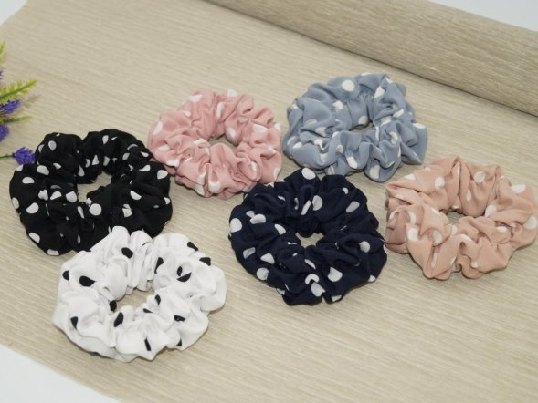
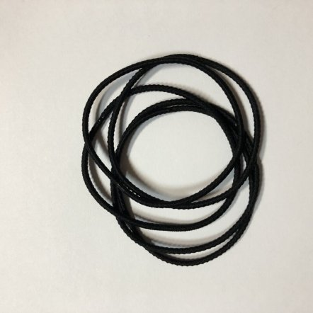

Час від часу ми експериментуємо з довжиною нашого волосся, кольором чи
стилем. І зовсім не важливо, якої воно текстури — як світле довге волосся,
так і короткі темні локони потребують нашої уваги. Чи траплялось так, що
протестувавши 100500 різноманітних засобів у своєму щоденному догляді, не
було жодного результату, або ж він зовсім не такий, як ти очікуєш. Впевнена,
що для більшості ця ситуація знайома.🙂 Причин може бути декілька, але
найчастіше так трапляється тому, що ми забуваємо про найочевидніше — про
основи догляду за волоссям
. У цій статті я хочу поділитися з тобою 8 основними порадами, які
допоможуть зробити волосся твоєю візитною карткою.
Відмовся від гарячого душу
Гарячий душ — це чудова можливість розслабитись, привезти до ладу свої думки
та змити втому. Однак гаряча вода може серйозно нашкодити твоєму волоссю,
адже вона висушує шкіру голови та позбавляє волосся природних олій, що в
результаті спричиняє його сухість та ламкість, а також робить волосся
неслухняним та заплутаним. Тому, рекомендую
мити голову теплою водою, а для того, щоб закрити волосяну кутикулу, вкінці обов’язково обполіскуй
його водою кімнатної температури (важливо — не холодною!). Здавалось би,
такий незначний момент може сильно нашкодити твоєму волоссю та призвести до
погіршення стану шкіри голови і, навіть, надмірного його випадіння. Тому,
приймаючи душ обов’язково звертай увагу на температуру води.
Піклуйся про чистоту аксесуарів для волосся
Брудний гребінець чи щітка для волосся часто є причиною того, що твоя
зачіска виглядає несвіжою, волосся швидко жирніє чи має неприємний запах.
Тому важливо дбати не лише про особисту гігієну, але й про чистоту
аксесуарів для догляду за волоссям:
необхідно щодня очищати гребінець чи щітку від залишків волосся; не
користуйся чужими аксесуарами для волосся, адже вони є чудовим джерелом
бактерій, які можуть призвести до подразнень шкіри голови та пошкодження
волосяних кутикул;
слід раз на тиждень ретельно мити гребінець/щітку тепловою водою з
використанням мила, гелю для вмивання чи шампуню. Після чого варто дати
їм висохнути природнім шляхом або просушити феном на низькій
температурі;
періодично змінюй свою щітку для волосся на нову — з часом її структура
псується і при використанні це призводить до пошкодження волосся. Щітка
повинна бути м’якою, розчісувати швидко та ефективно, розплутуючи
волосся, і при цьому не висмикуючи його.
Усі ми користуємося засобами для догляду за волоссям. І навіть якщо у тебе
цей догляд складається лише з шампуню (сподіваюсь, що ні 😀), на аксесуарах
для волосся, фенах чи плойках накопичується чимало залишків цих продуктів.
Саме тому, періодично очищай усі аксесуари та прилади, які контактують з
твоїм волоссям і ти одразу помітиш різницю.🙂
Регулярна стрижка
Ще один крок до охайної та привабливої зачіски. І це пов’язано не лише з
естетичним виглядом — якщо ти хочеш, щоб твоє волосся було здоровим та
доглянутим, слід регулярно підстригати посічені та сухі кінчики. Наскільки
часто варто відвідувати перукаря залежить від типу та довжини твого
волосся, проте рекомендую робити це не рідше, ніж раз на 2-3 місяці.
Навіть якщо твоє волосся у хорошому стані — регулярна стрижка лише піде
йому на користь.
Кінці нашого волосся час від часу починають сіктися, волосся випадає та
обламується, а зачіска від цього виглядає не зовсім охайно. І якщо ти
мрієш про довге та густе волосся — не слід нехтувати регулярною стрижкою,
адже пошкоджена волосяна кутикула не буде захищати твоє волосся, натомість
навпаки буде відшаровуватися все вище, що призведе до погіршення його
стану. Тому, найкраще рішення — це обрізати кінчики волосся поки
пошкодження є мінімальними.🙂
А для того, аби якомога довше вберегти твоє волосся в чудовому стані,
зміцнити його та захистити кінчики від небажаних травмувань, ти можеш
додати до свого догляду олії для волосся. Достатньо 2-3 краплі олії
розтерти у долонях та рівномірно розподілити на волоссі. Але пам’ятай, що
наносити їх слід лише на кінчики. Якщо у тебе довге пошкоджене волосся, то
можеш використовувати олію максимально до рівня вух. У жодному випадку не
нанось її по всій довжині волосся та на шкіру голови, адже таким чином,
твоє волосся втратить об’єм, а зачіска виглядатиме несвіжою.
Уникай тертя
Волосяна кутикула складається з ороговілих клітин, які у здоровому волоссі
повинні щільно прилягати одна до одної, утворюючи відповідний захист. При
їх пошкодженні волосся втрачає об’єм, стає тьмяним та ламким. І в усьому
винен невідповідний догляд? А от і ні!
Зазвичай причина такого стану твого волосся може бути пов’язана з:
використанням надто тугих резинок та жорстких аксесуарів для волосся. Це ж
стосується й нееластичних, зужитих резинок, адже вони створюють зайвий
стрес для волосся, що може призвести до його ламкості та навіть випадіння.
Якщо ж ти обожнюєш туго зібране волосся, то залиш цю зачіску для особливих
випадків.🙂 Натомість у буденному житті намагайся використовувати резинки
з натурального шовку чи бавовни — вони є значно дбайливішими та не
залишають заломів на волоссі.
Можна використовувати
Не варто


Розтиранням вологого волосся рушником — такі
маніпуляції також негативно відображаються на стані волосся, адже, як і в
попередньому випадку, травмується волосяна кутикула, в результаті чого ти
отримуєш посічені кінчики, ламкість та сухе волосся.
Достатньо обережно промокнути помите волосся рушником, зачекати кілька
хвилин та висушити. В асортименті Cosibella ти можеш знайти рушники та
тюрбани, виконані з дбайливого матеріалу, що не пошкодять твоє волосся.
Такі прості, але дуже вагомі кроки справді здатні змінити стан твого
волосся. Потрібно лише трохи терпіння та регулярність. 😉
Турбуйся про шкіру голови
То як же подбати про шкіру голови? Я поділюсь з тобою двома важливими
порадами, які точно принесуть користь для твого волосся. Догляд
безумовно є важливим у твоїй щоденній рутині, проте не слід забувати й про
регулярний пілінг, який допоможе очистити шкіру голови, видалить всі
забруднення та відмерлі частинки шкіри. Завдяки цьому твоє волосся буде
рости блискучим, об’ємним та міцним. І це далеко не всі переваги, які ти
отримаєш від використання пілінгу для шкіри голови у своєму догляді — про
все на цю тему читай
за посиланням.
Другий варіант — це масаж шкіри голови . Досить простий та дієвий
спосіб, аби зміцнити та активізувати волосяні фолікули, сповільнити
надмірне випадіння волосся
, поліпшити кровообіг, делікатно відлущити відмерлу шкіру, а також
пришвидшити ріст волосся. Для цього ти можеш використовувати спеціальну
щітку для масажу шкіри голови
, великий вибір яких є на полицях Cosibella. Вони виготовлені з
водонепроникного матеріалу, тому їх можна легко використовувати під час
купання. Крім того, використання щітки для масажу шкіри голови покращує
проникання активних косметичних компонентів та підвищує їх ефективність.
Не спи з мокрим волоссям
Волосся дуже крихке, коли воно мокре, а це означає, що важливо дбайливо
ставитися до нього. Коли ти крутишся уві сні, як правило, пасма заплутуються
та пошкоджуються — тим більше якщо вони вологі. Завжди повністю
висушуй волосся перед сном , а ще краще — легенько зібрати його у
пучок, не перетискаючи сильно резинкою, або ж можна заплести у слабку
косичку, якщо довжина твого волосся це дозволяє.
Не варто лягати спати навіть з ледь вологим волоссям, адже це погано
впливає на його коріння, призводить до втрати об’єму та заломів. Щобільше
— можлива навіть поява лупи, з якою впоратися вже куди складніше.
Подбай про стан свого волосся заздалегідь, аби вранці не довелось
нервувати через несвіжий вигляд твоєї зачіски. Нехай волосся буде твоєю
гордістю, а не причиною для поганого настрою. 😉
Мінімум засобів, а максимум користі
Не переобтяжуй своє волосся! Що я маю на увазі, коли кажу про це?
Перш за все йдеться про різноманітні засоби для укладання та стайлінгу
волосся. Гелі, пінки, лаки, фіксуючі пасти та креми для вкладання — без
цього звісно не обійтися, але я й не кажу тобі, що потрібно зовсім від них
відмовитися. Ти маєш розуміти, що щоденне нанесення фіксуючих засобів на
волосся може пошкодити волосяну кутикулу, призвести до ламкості, сухості,
швидкого забруднення волосся та накопичення залишків продуктів на шкірі
голови. Як власниця пористого неслухняного волосся, я знаю, як інколи важко
досягти ідеальної зачіски. Однак, підібравши правильний догляд за волоссям,
до засобів для стайлінгу я повертаюся лише в особливих випадках. 🙂
І не лише надмірне використання засобів для укладання може шкодити твоєму
волоссю. Потрібно також стежити за тим, аби твій догляд був максимально
корисним:
періодично змінюй косметичні продукти, такі як маски, пілінги, олійки
для волосся, — не намагайся використовувати постійно один і той самий
засіб, навіть якщо він відмінно працює. Адже наше волосся, як і шкіра
голови, звикає до формули продукту і з часом їх дія вже не є такою
ефективною;
намагайся обирати шампуні, які окрім очищення, дбають також про шкіру
голови;
1-2 рази у тиждень роби SPA-догляд для свого волосся — нанеси
зволожуючу, живильну чи зміцнюючу маску (відповідно до потреб твого
волосся), загорни волосся в шапочку для душу, а поверх одягни тюрбан чи
рушник. А поки маска працює, послухай свій улюблений подкаст, почитай
книгу або ж проведи час за розмовами з рідними. Після — обов’язково
помий волосся.
Як це правильно зробити, ти можеш прочитати у нашій статті на цю тему.
Влаштуй своєму волоссю своєрідну дієту — використовуй лише ті засоби, які у
своєму складі мають активні компоненти, здатні покращити його стан та
вигляд. Не варто витрачати кошти в пошуках того самого “чудо-засобу”, який
після першого нанесення врятує твою зачіску. Достатньо звернутися до
косметологів, які допоможуть підібрати комплексний догляд за волоссям, що
підійде саме тобі.
Скажи «НІ» високій температурі
Я вже розповідала тобі про негативні наслідки гарячої води для волосся та
шкіри голови, але висока температура може зашкодити їм не менше. Щоденне
використання плойок та випрямлячів для волосся точно не приведуть тебе до
бажаного результату. Так, сьогодні твоя зачіска матиме чудовий вигляд, але
що станеться з твоїм волоссям через місяць? Намагайся це зловживати такими
девайсами та використовуй їх максимум 1 раз на тиждень. При цьому стеж, щоб
вони малирегульований температурний режим — це дозволить тобі обирати
та змінювати температуру відповідно до типу твого волосся.
І найголовніше, про що не потрібно забувати, —перед використанням фену, плойки чи випрямляча обов’язково слід наносити
на волосся термозахисний засіб, аби вберегти його від пошкоджень. Спреї, що містять у своїй формулі
силіконові та кератинові компоненти, захистять волосяну кутикулу та зроблять
волосся більш стійким до термічного пошкодження.
Пам’ятай, що турбота про твоє волосся полягає не тільки у використанні
відповідних косметичних продуктів, але і в дбайливому та усвідомленому
догляді. Трішки терпіння, регулярність, правильно підібрані косметичні
продукти та дотримання порад, якими я з тобою поділилась, — ось ключ до
сяючого та здорового волосся.